Après avoir compris comment l'ADN s'exprime en protéines (Ch.1-2), on se demande : comment peut-on manipuler les gènes (Ch.3) ? Pourquoi tous les individus sont-ils différents (Ch.4) ? Et selon quelles règles les caractères se transmettent-ils d'une génération à l'autre (Ch.5) ?
OGM, enzymes de restriction, ligase, plasmide, ADNc, clonage bactérien, 5 étapes.
Mutations géniques et chromosomiques. Méiose. Brassages génétiques. Formation des gamètes.
Lois de Mendel. Monohybridisme. Dominance et codominance. Test-cross. Hérédité liée au sexe.
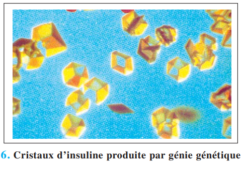
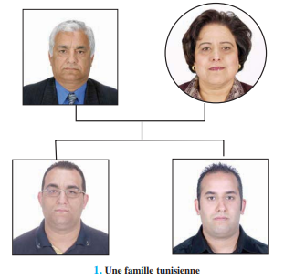
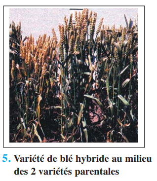
Le génie génétique = ensemble de techniques permettant la manipulation des gènes et leur transfert dans de nouveaux organismes → création d'OGM (Organismes Génétiquement Modifiés) ou organismes transgéniques. Objectif : produire des substances utiles à l'Homme en quantité industrielle.
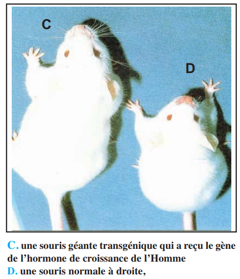
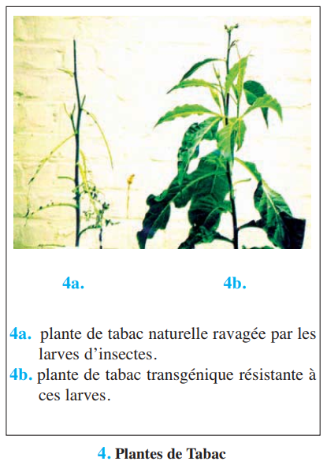
| Domaine | Application | Exemple concret |
|---|---|---|
| Médical | Production d'hormones thérapeutiques | Insuline humaine par E. coli (depuis 1979) · Hormone de croissance (1979) |
| Médical | Production de vaccins | Vaccin hépatite B via levures Saccharomyces (1986) |
| Médical | Thérapie génique | Correction déficit ADA (1990) — fillette isolée en «bulle stérile» |
| Agronomie | Résistance aux insectes | Tabac transgénique avec gène Bacillus thuringiensis (1987) |
| Agroalimentaire | Édulcorant naturel | Thaumatine (2000× pouvoir sucrant du saccharose) par levures |
| Étape | Mécanisme | Outils / Détails |
|---|---|---|
| ① Obtention du gène | Voie A : ADN chromosomique → enzymes restriction → fragments → sonde radioactive repère le gène Voie B : ARNm du tissu producteur → transcriptase reverse → ADNc (sans introns !) |
Enzymes de restriction + sonde radioactive (voie A) Transcriptase reverse (voie B) ⚠️ ADNc = sans introns → mieux pour expression bactérienne |
| ② Insertion dans vecteur | Même enzyme restriction ouvre le plasmide et découpe le gène → bouts cohésifs complémentaires → ligase «colle» le gène dans le plasmide → ADN recombiné | ⚠️ Même enzyme restriction pour plasmide ET gène (bouts cohésifs complémentaires !) Ligase = «colle moléculaire» |
| ③ Introduction + repérage | Plasmides recombinés mis en contact avec E. coli → certaines bactéries intègrent le plasmide Gène marqueur de résistance à un antibiotique → seules les bactéries transformées survivent sur milieu + antibiotique |
E. coli choisie car : facile à cultiver, multiplication rapide (÷ /20 min), possède ribosomes pour synthèse protéique |
| ④ Clonage | Bipartition de E. coli → multiplication exponentielle → clonage des bactéries ET du plasmide recombiné qu'elles contiennent | En 24h : millions de bactéries identiques contenant toutes le gène greffé |
| ⑤ Expression & Extraction | Le gène greffé est exprimé : transcription + traduction → protéine cible synthétisée Extraction : choc osmotique (milieu hyper- puis hypotonique) OU lyse cellulaire |
⚠️ Le gène doit être précédé d'un promoteur pour être transcrit dans la bactérie hôte |
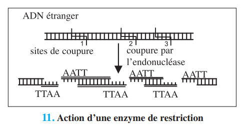
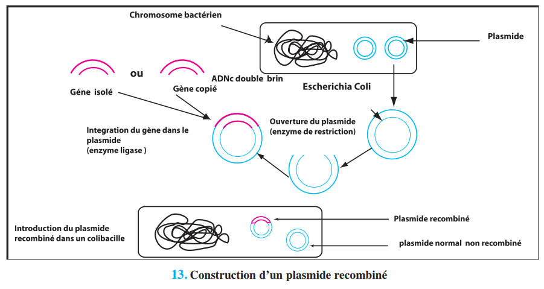
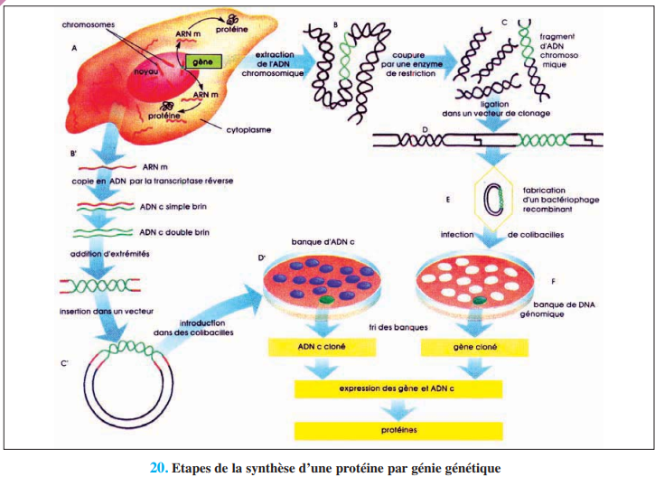
La diversité génétique des individus a deux origines principales : les mutations (créent de nouveaux allèles) et la reproduction sexuée (brassage des allèles existants par méiose + fécondation). C'est pourquoi chaque individu est unique.
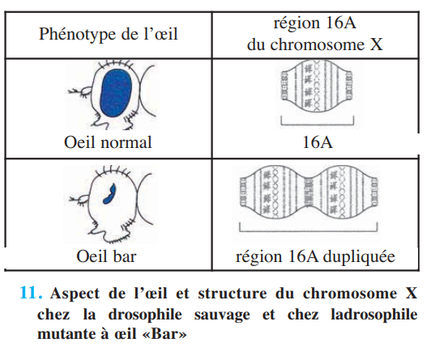
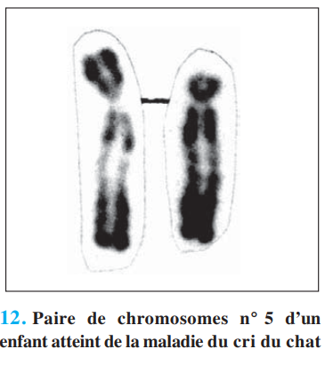
| Type de mutation chr. | Mécanisme | Exemple |
|---|---|---|
| Délétion | Perte d'un fragment chromosomique | Syndrome du cri du chat (perte bras court chr.5) |
| Duplication | Répétition d'un segment | Œil «Bar» chez Drosophile (région 16A dupliquée) |
| Translocation | Échange entre chromosomes non homologues | Remaniements chromosomiques chez Drosophile (formation de nouvelles espèces) |
| Fusion | Deux paires → une seule | Réduction du nombre de chromosomes → barrière à l'interfécondité |
| Type de mutation génique | Mécanisme | Conséquence |
|---|---|---|
| Substitution | Remplacement d'une base par une autre | Changement d'1 acide aminé (ex: drépanocytose, phénylcétonurie) |
| Délétion | Suppression d'un ou plusieurs nucléotides | Décalage du cadre de lecture → protéine tronquée ou non fonctionnelle |
| Addition | Insertion d'un ou plusieurs nucléotides | Décalage du cadre de lecture |
| Silencieuse / neutre | Substitution sans changement d'acide aminé | Aucun effet phénotypique (redondance du code génétique) |
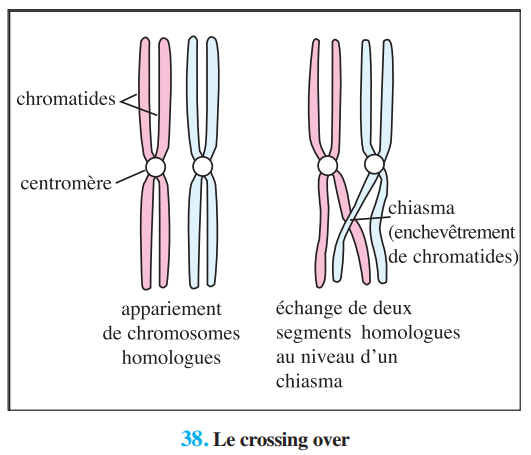
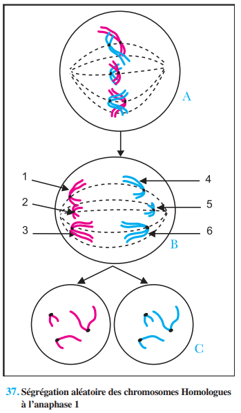
| Type de brassage | Quand ? | Mécanisme | Résultat |
|---|---|---|---|
| Intrachromosomique | Prophase I | Crossing-over : échange de fragments entre chromatides NON-sœurs de chromosomes homologues au niveau d'un chiasma | Chromatides recombinées (combinaisons nouvelles d'allèles sur un même chromosome) |
| Interchromosomique | Anaphase I | Séparation ALÉATOIRE des paires de chromosomes homologues (origines maternelle/paternelle mélangées) | 2ⁿ combinaisons de gamètes différents (n = nbre de paires de chromosomes) Chez l'Homme : 2²³ = 8,4 millions de types de gamètes ! |
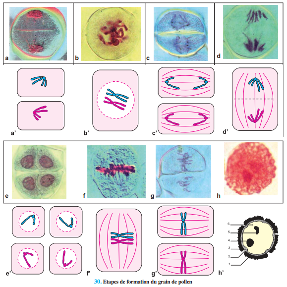
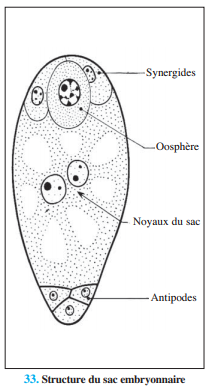
Si la méiose produit 2ⁿ gamètes différents, la fécondation (rencontre au hasard de deux gamètes) donne 2ⁿ × 2ⁿ = 2²ⁿ zygotes différents possibles.
Chez l'Homme (2n=46) : 2⁴⁶ ≈ 7 × 10¹³ individus génétiquement différents possibles. «Qui fait un œuf fait du neuf» (André Langaney)
La génétique formelle (Mendel, 1865) établit des règles mathématiques qui régissent la transmission des caractères héréditaires. Ces lois expliquent comment les allèles paternels et maternels se comportent lors de la méiose et se réunissent à la fécondation.
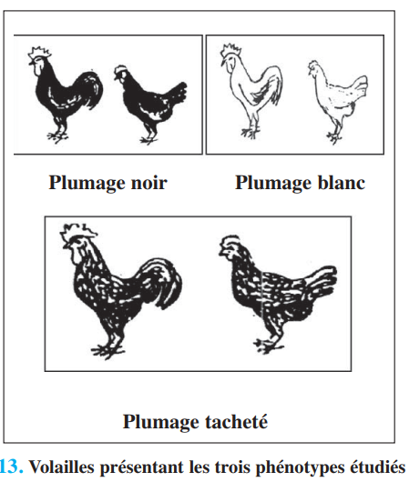
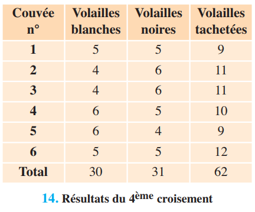
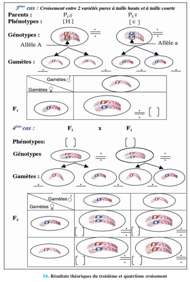
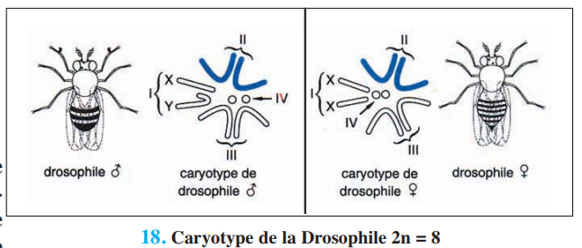
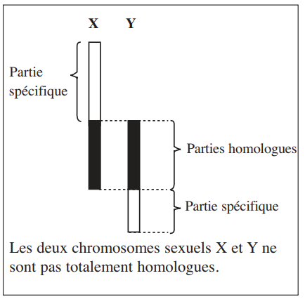
| Locus du gène | Mode de transmission | Particularités |
|---|---|---|
| Partie homologue X et Y | Autosomale classique | Caractère chez ♂ et ♀ — croisement direct = réciproque |
| Partie spécifique de Y | Holandro-dromique (père → fils) | Caractère UNIQUEMENT chez les ♂ |
| Partie spécifique de X ★ | Gonosomique (liée au sexe) | Croisement réciproque ≠ direct. ♂ hémizygote exprime toujours son allèle X unique |
«La F1 issue du croisement de deux lignées pures différentes par un caractère est uniforme : même génotype et même phénotype» → tous des hybrides hétérozygotes.
«Un hybride (A//a) forme deux types de gamètes : A ou a. Chaque gamète ne contient qu'un seul allèle → l'allèle garde son information intacte» → disjonction des allèles à la gamétogenèse (anaphase I de méiose).
Les chapitres 3, 4 et 5 forment un ensemble cohérent autour de la manipulation, de la diversité et de la transmission de l'information génétique (ADN).
| Concept | Ch.3 — Génie génétique | Ch.4 — Diversité | Ch.5 — Transmission |
|---|---|---|---|
| ADNc | Voie via ARNm + transcriptase reverse (sans introns) | — | — |
| Allèles | Marqueur résistance antibiotique (outil) | Créés par mutations géniques | Transmis selon lois de Mendel |
| Méiose | — | Source de brassage génétique | Explique la pureté des gamètes (2ème loi) |
| E. coli | Cellule hôte — bipartition rapide | Exemple mutation résistance (streptomycine) | — |
| Chromosomes sexuels | — | — | Hérédité liée au X (Morgan) |